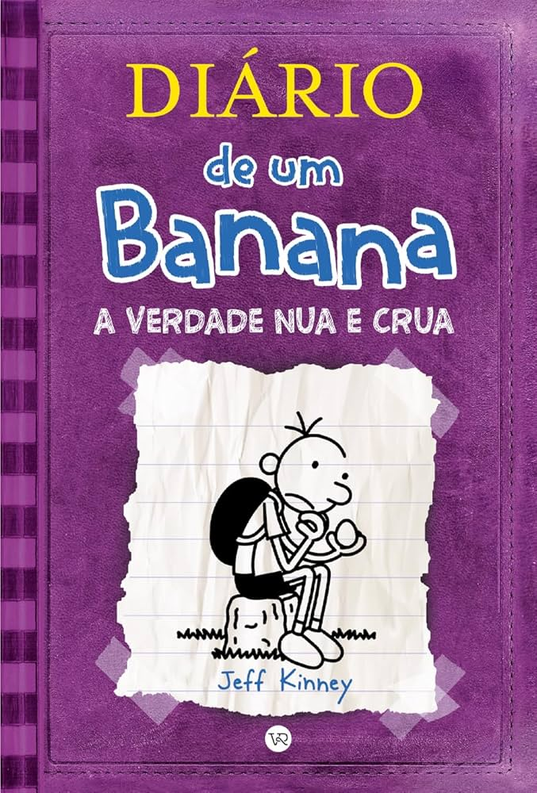
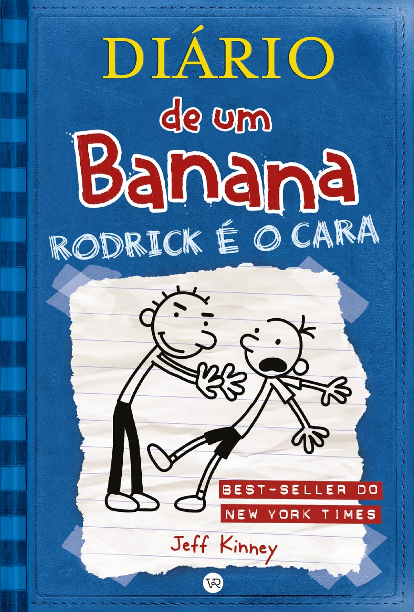
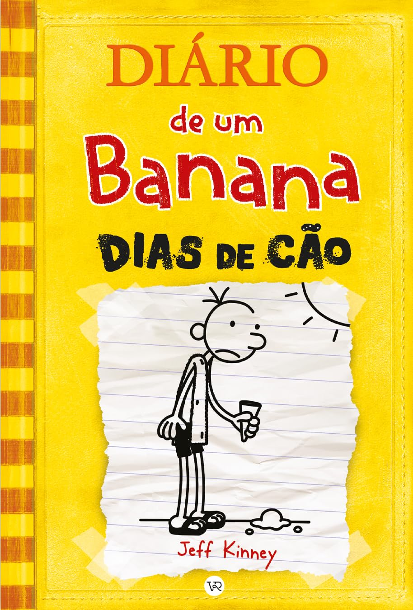
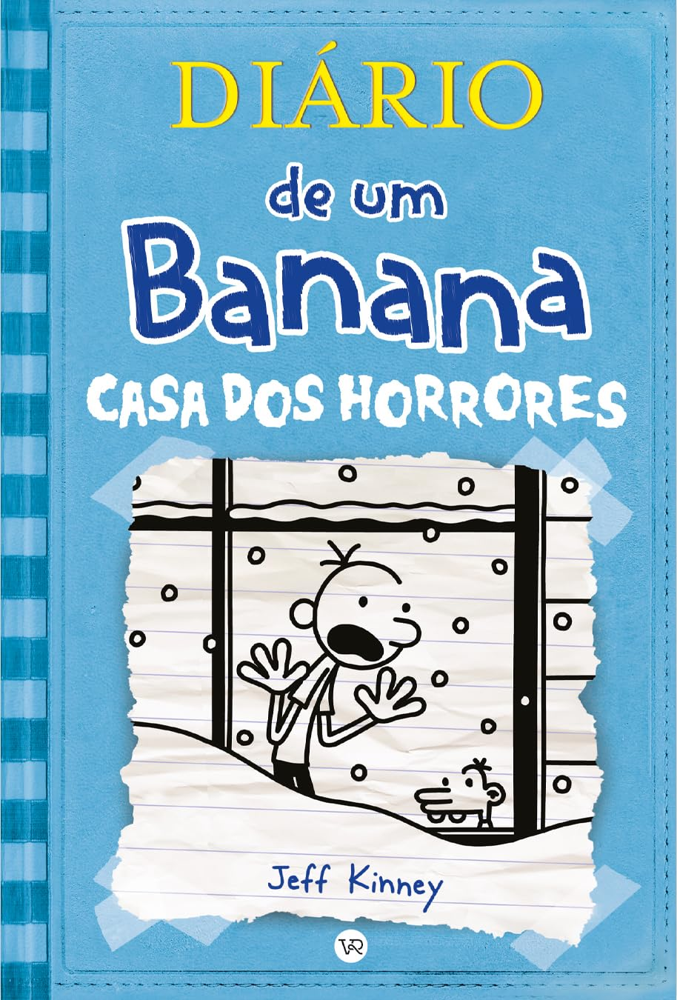
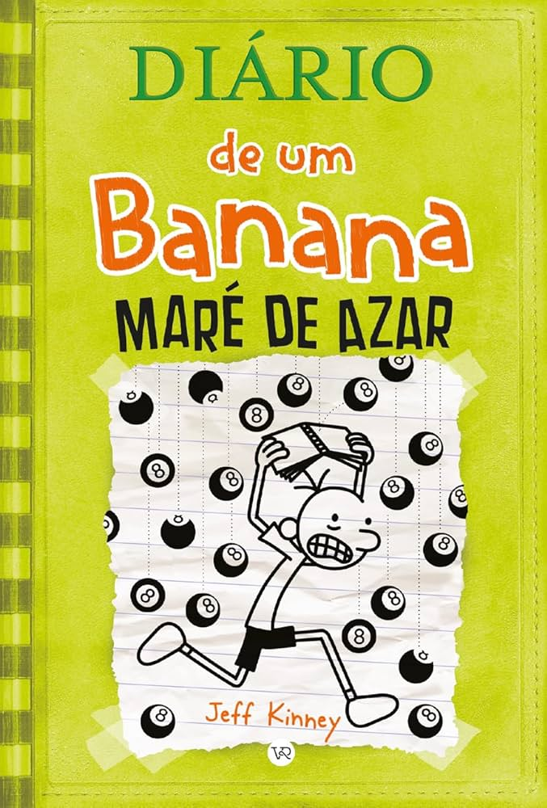
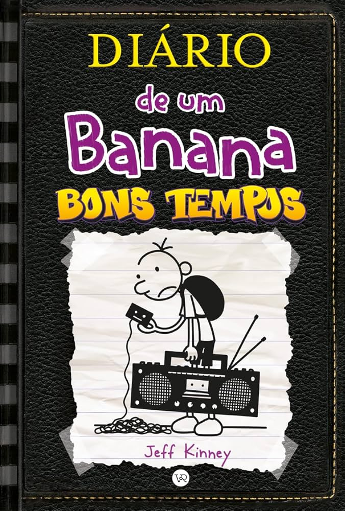

Diario de um banana: A verdade nua e crua
Greg Heffley está crescendo e começa a perceber que a adolescência não é tão fácil
assim. Ele lida com mudanças no corpo, novas responsabilidades e a pressão para amadurecer, mas tudo o
que ele quer é continuar fazendo as coisas do seu jeito. Enquanto tenta impressionar Holly Hills, uma
das meninas mais populares da escola, Greg também precisa lidar com a mãe, que insiste para que ele saia
de sua zona de conforto.

Diario de um banana: Rodrick é o cara
Neste volume, Greg tem que lidar com seu irmão mais velho, Rodrick, que adora pegar no
pé dele. Depois das férias de verão, Greg tenta a todo custo manter um segredo embaraçoso em segredo,
mas Rodrick sabe de tudo e está pronto para usá-lo contra ele. Enquanto isso, Greg precisa encarar
desafios na escola e em casa, especialmente com sua mãe tentando forçar uma amizade entre os dois
irmãos.

Diario de um banana: Dias de cão
As férias de verão chegaram e, para Greg, a melhor forma de aproveitá-las é dentro de
casa jogando videogame. No entanto, sua mãe tem outros planos e quer que ele saia mais, leia livros e
aproveite o tempo com a família. Para piorar, sua amizade com Rowley passa por altos e baixos, e Greg se
vê preso em várias situações embaraçosas, incluindo um clube de leitura forçado e um hotel de luxo que
não sai como esperado.

Diario de um banana: Casa dos horrores
No Halloween, Greg Heffley se vê envolvido em um grande pesadelo quando sua cidade
enfrenta uma tempestade que deixa todos presos em casa. Enquanto tenta sobreviver ao tédio e ao caos
familiar, Greg também precisa lidar com o medo do escuro, barulhos estranhos e uma vizinhança que parece
mais assustadora do que nunca. A história mistura humor e tensão, mostrando como Greg encara seus medos
e desafia sua própria imaginação.

Diario de um banana: Maré de azar
Greg está passando por uma fase de muito azar. Tudo o que ele faz dá errado, desde
problemas na escola até desastres em casa. Para piorar, ele acredita que está sendo vítima de uma
maldição. Tentando mudar sua sorte, Greg se envolve em diversas trapalhadas, mas sempre acaba piorando a
situação. Neste livro, a ironia e as confusões são o destaque, mostrando como Greg tenta sair ileso de
sua maré de azar.

Diario de um banana: Bons tempos
Greg sente que nasceu na época errada e acha que a vida seria muito melhor no passado.
Quando sua cidade decide fazer um evento sem tecnologia, onde todos precisam viver como antigamente, ele
percebe que talvez a vida moderna não seja tão ruim assim. Com muitas dificuldades para se adaptar, Greg
enfrenta desafios sem celular, videogame e internet, aprendendo da pior maneira possível que os "bons
tempos" podem não ser tão bons assim.
